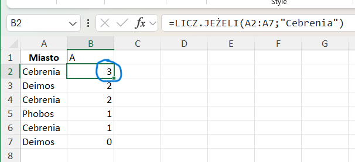
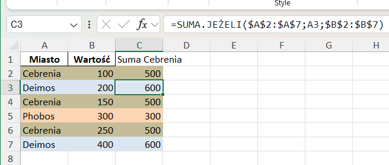
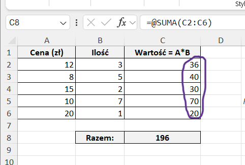

Rozwiązanie zadania maturalnego
z informatyki w Excelu
Jaką wiedzę musisz mieć przed zadaniami z Excela?
Użyj strzałki ↓, aby przejść dalej ↓
Excel – podstawy przed maturą (1/2)
Excel – podstawy przed maturą (2/2)
1.1) Komórki i import (pliku do Excela)
Excel to siatka komórek (kolumny A,B,C… i wiersze 1,2,3…). Adres komórki to np. A1. Komórki mogą zawierać liczby, tekst, daty lub formuły. Arkusz to jedna karta w pliku.
Formuła zaczyna się od =, np. =A2+B2. Formuły kopiujesz przeciągając prawy-dolny kwadracik komórki.
1.2) Import danych – krok po kroku
W Excelu: Dane → Z pliku tekstowego/CSV → wybierz martianeum.txt.
Pojawi się okno importu z podglądem danych.
Wybierz Separator: Tabulator (TSV). Upewnij się, że liczby mają przecinek,
np. 7,25 (a nie 7.25).
Upewnij się, że pierwszy wiersz to nagłówki kolumn, a puste kolumny po imporcie usunięto.
2.1) Podstawowe operacje - suma lub przeciągnięcie formuł
Formuła zawsze zaczyna się od =.
Przykład: =A2*B2. Możesz używać funkcji,
np. =SUMA(A1:A10).
Kliknij komórkę z formułą → złap mały kwadrat w prawym-dolnym rogu → przeciągnij w dół/prawo (A2→A3→A4…).
style="width:80%; border:1px solid #ccc; display:block; margin:1rem auto;">2.2) Formatowanie danych
Zaznacz kolumnę → prawy przycisk → Formatuj komórki → wybierz Liczba (np. 2 miejsca) lub Data.
Ważne: wszystkie daty w jednym formacie (np. dd.mm.rrrr), liczby z przecinkiem.


2.3) Sortowanie i filtrowanie
Dane → Sortuj po dacie (rosnąco). Chronologia jest kluczowa w dalszych zadaniach.

3.1) Proste obliczenia – SUMA
Dodaje wszystkie liczby w zakresie.
=SUMA(C2:C999)
Zwróci łączną wartość z kolumny C (wiersze 2–999).
3.2) Proste obliczenia – ŚREDNIA
Średnia arytmetyczna z zakresu.
=ŚREDNIA(C2:C999)
Przydatne np. dla średniej zawartości.

3.3) Proste obliczenia – MIN i MAX
Najmniejsza i największa wartość w zakresie.
=MIN(C2:C999)=MAX(C2:C999)

Uważaj na zakresy – całe kolumny (C:C) tylko gdy nie ma nagłówków/tekstu.
4.1) Warunki – funkcja JEŻELI
Sprawdza warunek i zwraca różne wyniki w zależności od tego, czy warunek jest spełniony.
=JEŻELI(test; wtedy; inaczej)
Przykład: =JEŻELI(A2>=100;"OK";"Za mało")

4.2) Warunki – LICZ.JEŻELI
Zlicza, ile komórek w zakresie spełnia podane kryterium.
=LICZ.JEŻELI(A:A;"Cebrenia")
Policzy wszystkie wiersze, w których kolumna A = â€Cebreniaâ€.
4.3) Warunki – SUMA.JEÅ»ELI
Dodaje wartości tylko wtedy, gdy spełnione jest jedno kryterium.
=SUMA.JEŻELI(A:A;"Cebrenia";E:E)
Doda wartości z kolumny E, ale tylko dla wierszy, gdzie kolumna A = â€Cebreniaâ€.
=SUMA.JEŻELI($A$2:$A$7;A2;$E$2:$E$7)
Ta wersja dziaÅ‚a â€po kolei†– dla każdej linijki sumuje wartości przypisane do miasta z kolumny A. PrzykÅ‚ad: w wierszu 2 policzy tylko â€Cebreniaâ€, w wierszu 3 policzy â€Deimos†itd.
4.4) Warunki – SUMA.WARUNKÓW
Dodaje wartości tylko wtedy, gdy spełnione są wszystkie kryteria.
=SUMA.WARUNKÓW(C:C; A:A; "Cebrenia"; B:B; 2033)
⤠C:C – kolumna, z której sumujemy wartości.
⤠A:A; "Cebrenia" – pierwszy warunek: tylko wiersze, gdzie Miasto = â€Cebreniaâ€.
⤠B:B; 2033 – drugi warunek: dodatkowo Rok = 2033.
W naszym przykładzie Excel zsumuje tylko wartości z wierszy, gdzie Miasto to „Cebrenia” i Rok to „2033”.
Wynik: 500.
4.5) Warunki – LICZ.WARUNKI
Zlicza, ile wierszy spełnia kilka kryteriów jednocześnie.
=LICZ.WARUNKI(Obszar;"Cebrenia"; Rok;2033)
Policzy wszystkie rekordy, w których Obszar = â€Cebrenia†i Rok = 2033.

Warunki tekstowe i porównania łącz przez &, np. ">"&100.
5) Tabele przestawne – mini-przewodnik
- Zaznacz dane → Wstaw → Tabela przestawna (nowy arkusz).
- Ustaw pola: Wiersze (np. obszar), Kolumny (np. rok), Wartości (np. masa).
- ZmieÅ„ funkcję wartości: â€Suma†→ â€Åšrednia†lub â€Liczbaâ€.

6) Wykresy – kolumnowy skumulowany
- Na bazie tabeli (najlepiej przestawnej) zaznacz dane.
- Wstaw → Kolumnowy skumulowany.
- Dodaj tytuł, opisy osi, legendę; sprawdź skale.
Skumulowany pokazuje wkład kategorii w całość w danym roku/okresie.

7.1) Adresowanie względne
Adres względny (np. A1) przesuwa się przy kopiowaniu formuły w dół lub w bok.
=A2*B2
Po skopiowaniu w dół: =A3*B3, =A4*B4…
W przykładzie kolumna C liczy Cena × Ilość dla każdego wiersza.
7.2) Adresowanie bezwzględne
Adres $A$1 jest bezwzględny – przy kopiowaniu pozostaje zawsze ten sam.
=B2*$E$1
Każdy wiersz mnoży przez stały kurs z $E$1, niezależnie od miejsca kopiowania.
Ważne: Znak $ blokuje kolumnę i wiersz – dzięki temu formuła nie "przesuwa się".
7.3) Adresowanie mieszane
3 Stała kolumna lub stały wiersz
$A1 – kolumna A stała, wiersz zmienny.
A$1 – wiersz 1 stały, kolumna zmienna.
=$B2*C$1
Dzięki temu kopiując w dół – zmienia się wiersz z ceną ($B2 → $B3 → $B4).
Kopiując w prawo – zmienia się ilość (C$1 → D$1 → E$1).
W efekcie powstaje tabelka: cena × ilość dla każdego produktu.